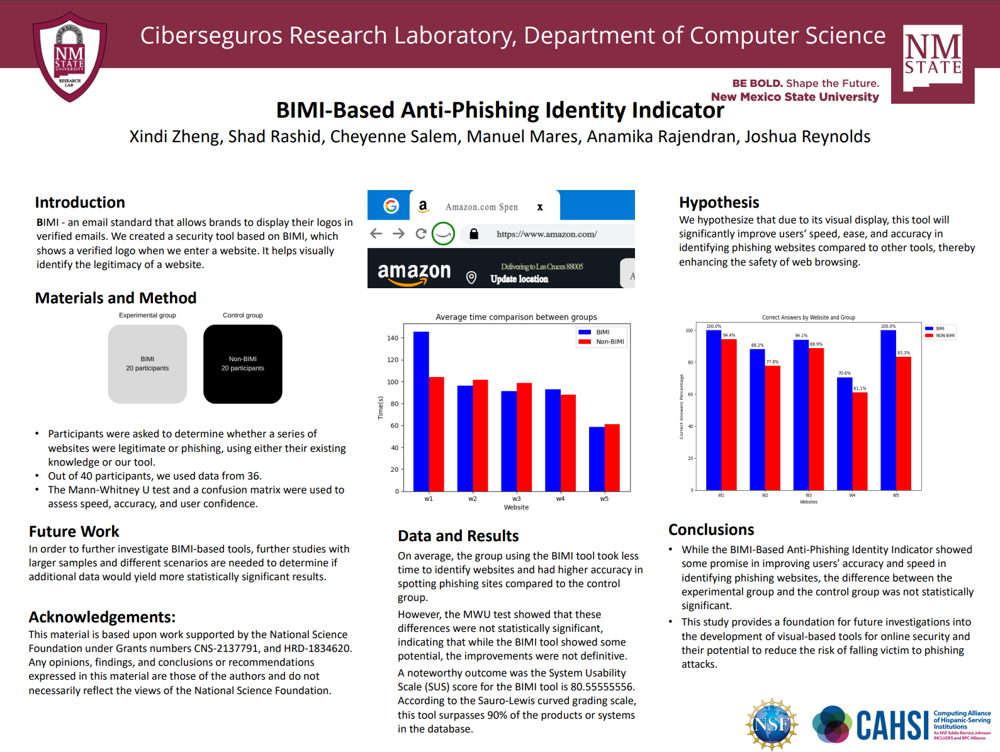
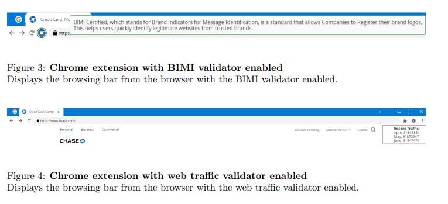

Research
BIMI-Based Anti-Phishing Identity Indicator
Abstract:
In today’s increasingly digital world, phishing attacks have become one of the most prominent cyber threats, posing significant risks to individual users and organizations alike. As malicious actors use increasingly sophisticated tactics to deceive users, the need for effective anti-phishing tools is more critical than ever. Brand Indicators for Message Identification (BIMI) is an email security standard designed to address part of this challenge by allowing brands to display their logos in verified emails. This not only boosts brand recognition but also helps recipients visually confirm the legitimacy of the sender. Inspired by the success of BIMI in the email space, we developed a security tool that brings similar principles into the realm of web browsing. Our tool integrates BIMI-based verification, displaying a brand’s verified logo when users visit a website. By enabling users to visually identify legitimate websites, this tool aims to simplify the process of distinguishing between phishing and authentic websites, reducing the risk of falling victim to online scams.
Implementing And Measuring BIMI and Web Traffic Validators As Phishing Detection Tools In Web Browsers
Abstract:
Phishing is a prevalent cyberattack where the attacker disguises themselves as a legitimate entity to steal sensitive information. Although there are multiple approaches, such as blacklists and whitelists, to validate the legitimacy of websites, they are not very effective, partially due to the lack of central authorities that accurately verify website identities. This research explores the implementation of the Brand Indicators for Message Identification (BIMI) dataset, which validates websites through their DNS at the request of the website owners. we developed a tool that presents a web browser to the user, where a validator icon indicates the validation status with BIMI. Additionally, we incorporated a web traffic validator into the browser modification and tested this implementation with real users. Using paired t-tests, we measured the efficiency and accuracy of these tools in aiding users to identify malicious websites compared to using no tools at all.
